Hay quien confunde el viaje al centro con una excursión dominguera y los congresos políticos con unos juegos florales.
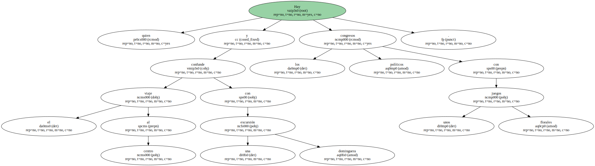En nuestro horizonte público , como en la capa de ozono , existen agujeros negros por los que se precipitan las conquistas sociales.
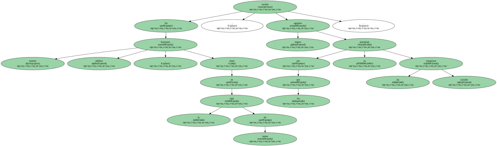Al lobo de la derecha , como al del cuento de Caperucita , se le ven las orejas y las intenciones.
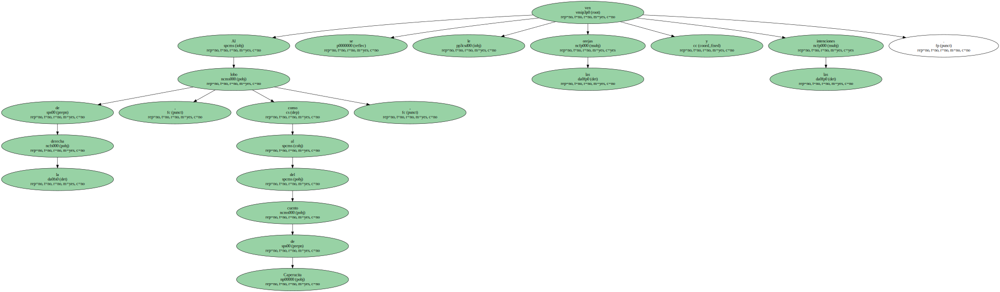Unos 200 trabajadores de Efe , la agencia estatal de información , están amenazados por la regulación de empleo.
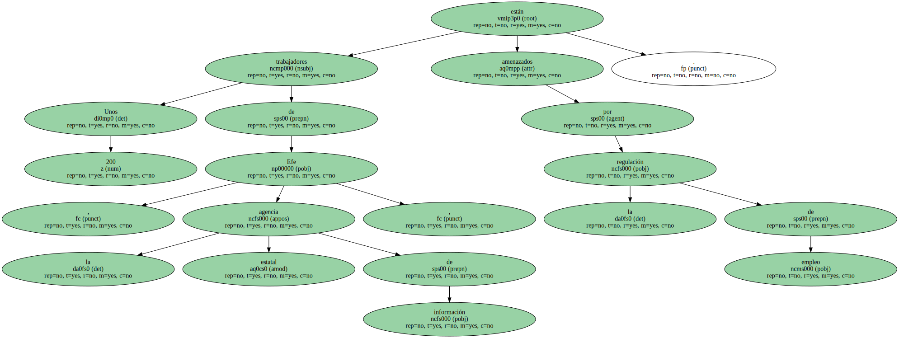Son trabajadores serios , honrados , imparciales.
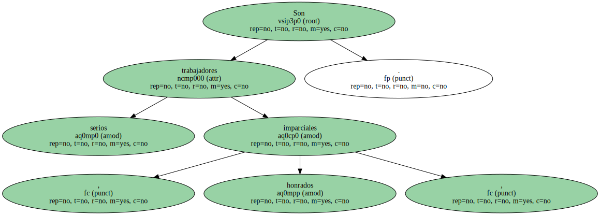No importa.

Llevan años al servicio de la empresa informativa dando muestras de su competencia profesional.
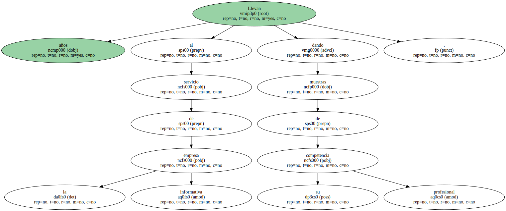No importa.

Unos han ejercido la jefatura de delegaciones en el extranjero , otros han desempeñado puestos de dirección en nuestro país informando con rigor y objetividad.
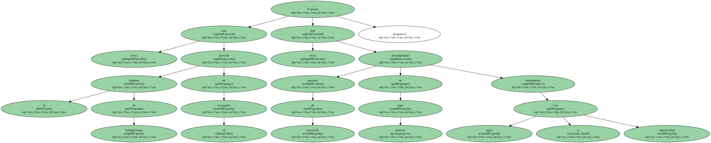No importa.

Los ministros de Trabajo de la UE acordaron no seguir fomentando las jubilaciones anticipadas por sus altos costes laborales y sociales.
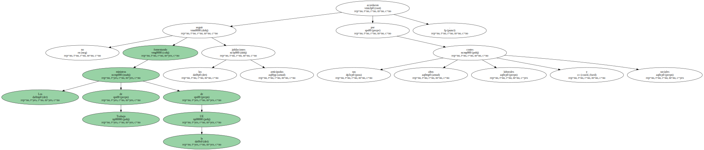No importa.

El Gobierno prometió una nueva política laboral para mantener en sus empleos a los mayores de 65 años que no deseen jubilarse.
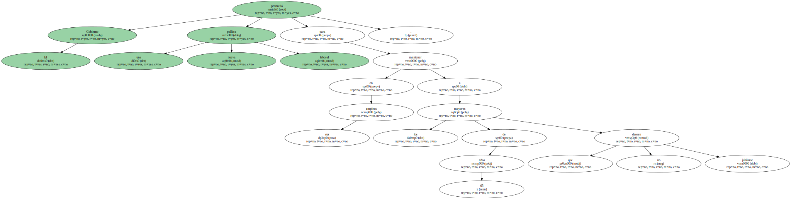No importa.
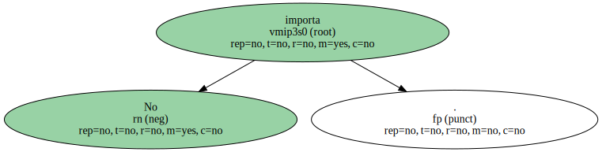Ocupamos uno de los primeros lugares en cuanto a número de desempleados.
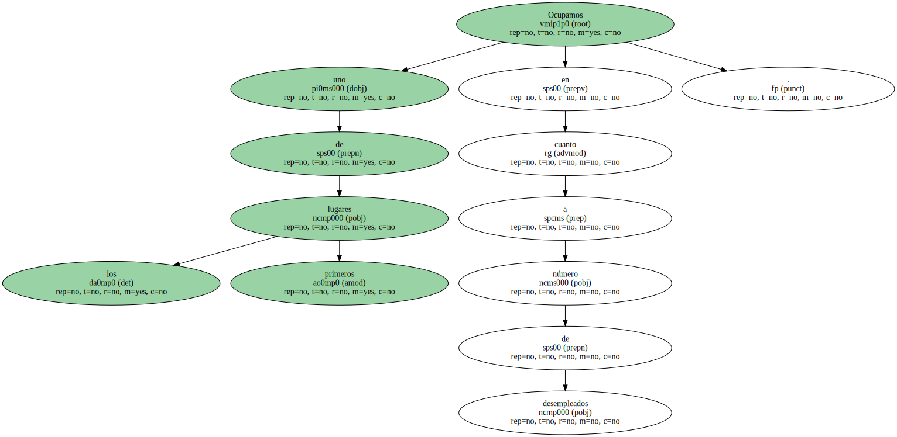No importa.

En la campaña electoral prometieron dar prioridad a la lucha contra el paro cuando llegaran al Gobierno.
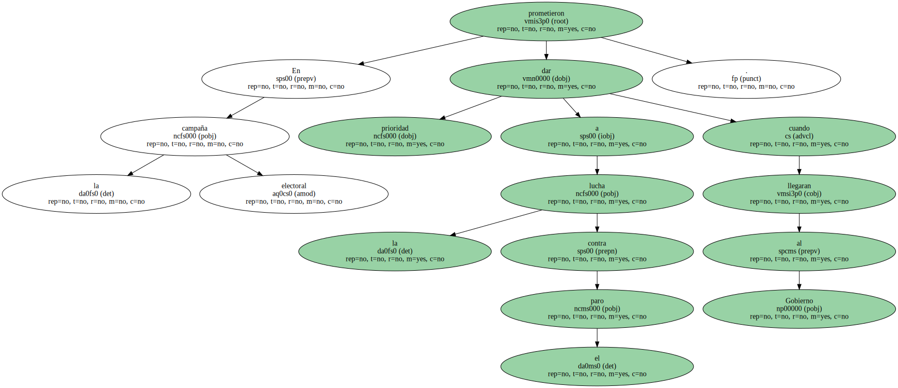No importa.

Los periodistas de Efe que han cumplido 57 años están directamente amenazados por el expediente de regulación de empleo.
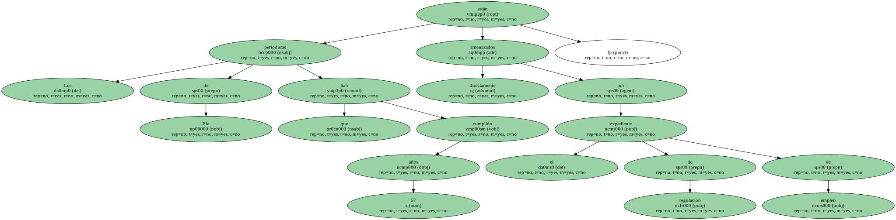También se recurre , como las empresas privadas , a las jubilaciones anticipadas para hacer recaer sobre la Seguridad Social - - una Seguridad Social que recorta fármacos para ahorrar - - una parte de los costes generados por la medida arbitraria.
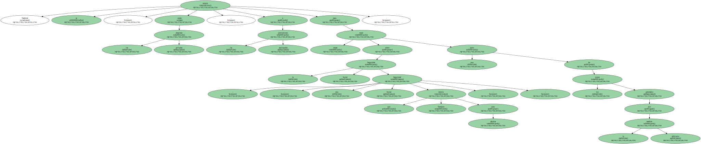Después nos meten el miedo en el cuerpo con el futuro de las pensiones por la falta de recursos.
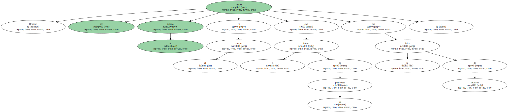Aunque el mercado carece de alma , hay razones para evitar la condena a muerte laboral de personas bien capacitadas para su profesión.
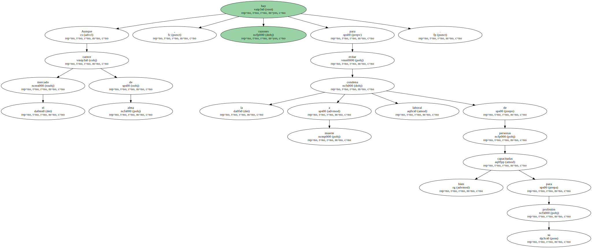A las empresas directamente dependientes del Gobierno corresponde predicar con el ejemplo.
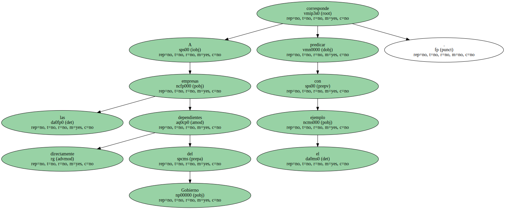Si son de centro , claro.
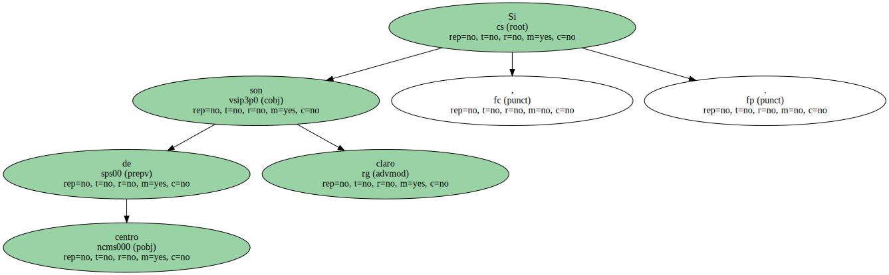